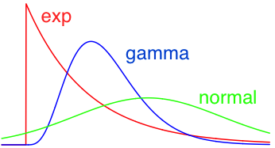

Randomizers
Random numbers are needed in many cases in Simbrain. The Simbrain object that generates random numbers is a randomizer object. Randomizers draw from different probability distributions, that the user sets. Once a distribution is set, its parameters can also be set. Some sample distributions are shown in the image below.

Common Properties
Clipping: When clipping is enabled, the randomizer will reject outside the floor and ceiling values. This is convenient, but it create artificial "pile-ups" at the floor and ceiling values. Other clipping methods are possible but not yet implemented.
Floor: An artificial minimum value set by the user. Any values drawn from the distribution set to the ceiling value. Any values drawn from the distribution below the minimum are set to the floor value.
Ceiling: An artificial maximum value set by the user. Any values drawn from the distribution above the maximum are set to the ceiling value.
Uniform
A uniform distribution is behind what most people intuitively think of as a random number generator. It choose numbers between floor and ceiling with equal probability.
Normal
A normal distribution is a standard Gaussian "bell-curve".
Mean: The expected value of the distribution.
Std. Deviation: The average squared distance from the mean.
Log-Normal
A log-normal distribution produces values such that, if you took their log, you would get a normal distribution. This distribution produces values from zero to infinity rather than -infinity to infinity. Firing distributions and synaptic efficacies (for example) are often modeled as log-normal distributions.
Location: the mean of the logarithm of this distribution. Very roughly, higher values make the peak of the distribution higher, while lower values (including negative values) make the peak of the distribution closer to 0.
Scale: the standard deviation of the logarithm of this distribution. Roughly controls the spread of the distribution. Higher values producer more spread out values.
Exponential
An exponential distribution that is useful when modeling times between events. Like log-normal it defined on the positive real numbers. It is a special case of a gamma distribution
Rate: the rate of exponential decay; higher rate parameters will produce more small values.
Gamma
A gamma distribution is the more general family that exponential families come from. Sometimes used to model synaptic strengths and firing rates. For more on the parameters (shape and scale) the reader is referred wikipedia page.
Shape: See here.
Scale: See here.
Pareto
A Pareto distribution is a power-law distribution with a minimum value and a power.
Slope: the power of the distribution.
Minimum: the minimum value the distribution will produce. Note that floor should never be lower than minimum.